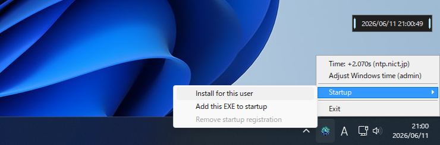
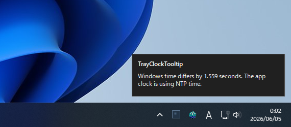
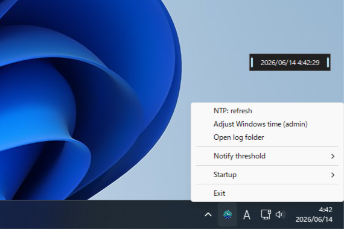

![]()

Lightweight tray clock with NTP time
TrayClockTooltip
A lightweight tray clock that can use NTP time. It replaces the standard tooltip with a floating clock and quietly notifies you when Windows time drifts.
Stays small, speaks up only when needed.
It keeps a low profile as a tray clock, while keeping NTP checks, drift notifications, and time adjustment close at hand.
It does not depend on the .NET Framework runtime and stays in the notification area without showing a main window. In local testing, normal memory use stays under 5 MB.
It queries the NTP server configured in Windows Time and uses that time for the app clock.
Hover the tray icon to show a centered floating date/time display instead of the standard tooltip.
The floating clock and notifications switch between light and dark styling based on Windows mode.
When Windows time differs from NTP time by 1 second or more, the app shows the state in a notification and menu.
Before a reservation, ticket sale, or other time-sensitive event, use Shift + right-click to expose time adjustment even for sub-second drift.
Run the EXE wherever you keep it, or use the tray menu to place it for the current user and register startup.
NTP checks and time adjustments are written to logs, so you can review when checks happened and how much drift was found.
Common actions stay in the tray menu. There is no persistent settings window or configuration file to manage.
A quiet notification when drift is detected.
Notifications use a custom window that follows Windows mode. Clicking one can start time adjustment when needed.
- ✓Checks NTP time at startup, logon, and unlock
- ✓Shows drift of 1 second or more in the notification and menu
- ✓Re-queries NTP time before applying it to Windows time
- ✓Asks for UAC only when adjusting time and does not run elevated

Controls stay on the tray icon and floating clock.
Hover to check the time. Pin, move, or use the right-click menu only when needed.
-
1
Hover the tray icon
Shows the floating clock like a tooltip.
-
2
Left-click to pin
Pins the clock and lets you drag it anywhere.
-
3
Right-click for the menu
Recheck time, adjust Windows time, or exit when needed. Hold Shift while opening the menu to adjust sub-second drift and open the log folder.
-
4
Rechecks after sleep
Rechecks time on logon or unlock after resume.
Advanced actions stay behind Shift.
The normal menu stays compact. When you want to sync even below 1 second of known drift or inspect logs, hold Shift while opening the menu.
- ✓Start adjustment even when known drift is below 1 second
- ✓Open the log folder to inspect NTP and adjustment history
- ✓Forced adjustment stays hidden while an NTP query is running

Download
The Release ZIP contains the EXE, README, and LICENSE. You can run the EXE as a portable app, or use the tray menu to place it for the current user and register startup.
d9552df15bc6d4e3fabda5535db66892d2f6b6c8818b3a189c49056067903432e92a0c9e383838086f905ba374994909b306465065f96b799f94703b5c261ed8